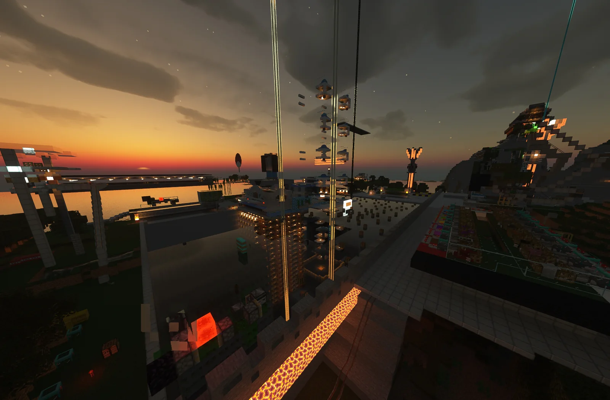
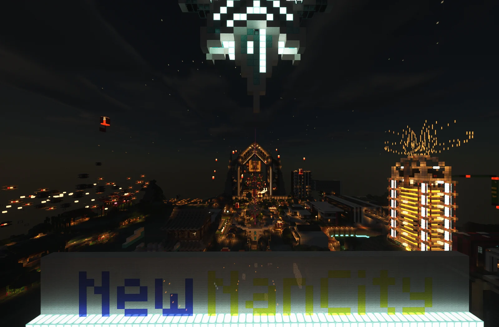
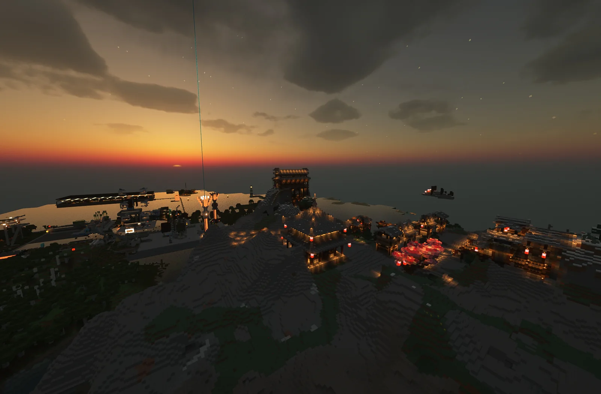
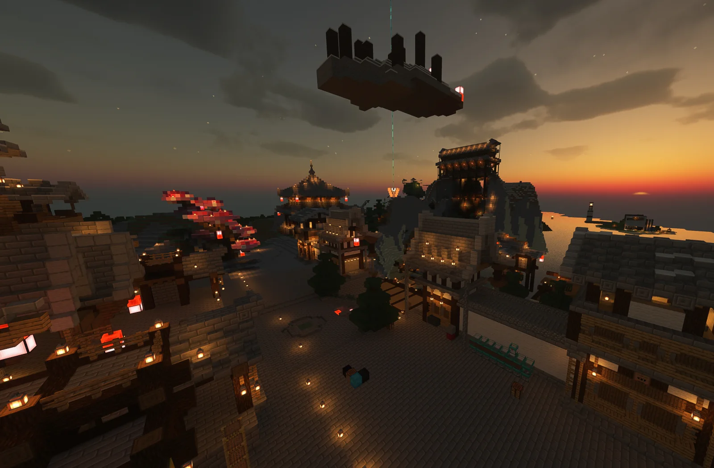

INDUSTRIAL / 01
天元工业区的完善机器
基本工业机器完善 不缺木头 不缺石头 不缺经验 不缺绿宝石 不缺铁... 就缺钻石 虽然说是一个工业城镇 几乎全员都做工业的 不过还有 啪叔 darculax的机库嘿嘿

01 / ORIGIN
佐助酱的奇幻之旅
天城二周目 -- 天元镇 镇长是前城镇 苍穹镇(一周目)的镇长 MSA_Sasuke 在经历过苍穹镇全员咕咕咕的时期 最终选择放弃了苍穹镇 另起炉灶，在20年年底巧妙遇到了邻居 jins和123666 是荒川的大佬 名副其实的大佬 他们俩一直在佐助的家白吃白喝 啥都不做 游手好闲 刚好在玩家涌入牛腩的时期 成为邻居了一段时间后 培养了友谊 决定一起建立新城镇发展 就是现在的天元镇啦~
天元镇主要的方向是工业发展 毕竟天元镇工业完善 工业机器发展虽然还没到头 但是在镇员努力的发展下已经发展得很好了 因此镇员们打算开始发展建筑 并且将工业区打造成建筑与机器结合的地方！确实有很好的计划呢

02 / DISTRICTS
工业机器持续运转，建筑区域也在同步生长。

基本工业机器完善 不缺木头 不缺石头 不缺经验 不缺绿宝石 不缺铁... 就缺钻石 虽然说是一个工业城镇 几乎全员都做工业的 不过还有 啪叔 darculax的机库嘿嘿

不过 你以为我们只有机器吗？其实不然 我们的其中一位成员 yuanOvO 是我们的城镇建筑大师 在建筑区的建筑都是他造的！据说是根据游戏“原神”的建筑去打造
03 / SYSTEMS
阿哲？看了那么久你居然问我有什么特色？
我们拥有着产量最高的铁人塔 还有其他大型机器例如 鱼塔 印钞机 牛场等等 花的赶不上生产的 并且不会停止建造
包括镇长在内的大部分镇员经常上线 而且肝量十足
我们不会主动招新玩家来 若喜欢我们的城镇 加入Q群我们考虑让你加入awa
所以我们的镇员对于mc的知识水平还是挺高的!...吧
在Q群和游戏只聊游戏细节和梗 绝没有人破口大骂 啊..还有吹牛
小心在群里或者游戏说过的话让兄弟知道了 他们可能会截图放在“FLAG”相册哦~)阴险
04 / ROADMAP
05 / CONNECT